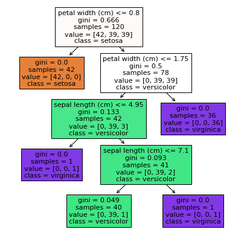
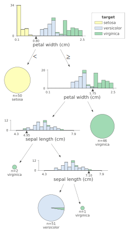
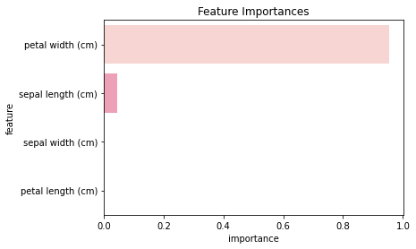
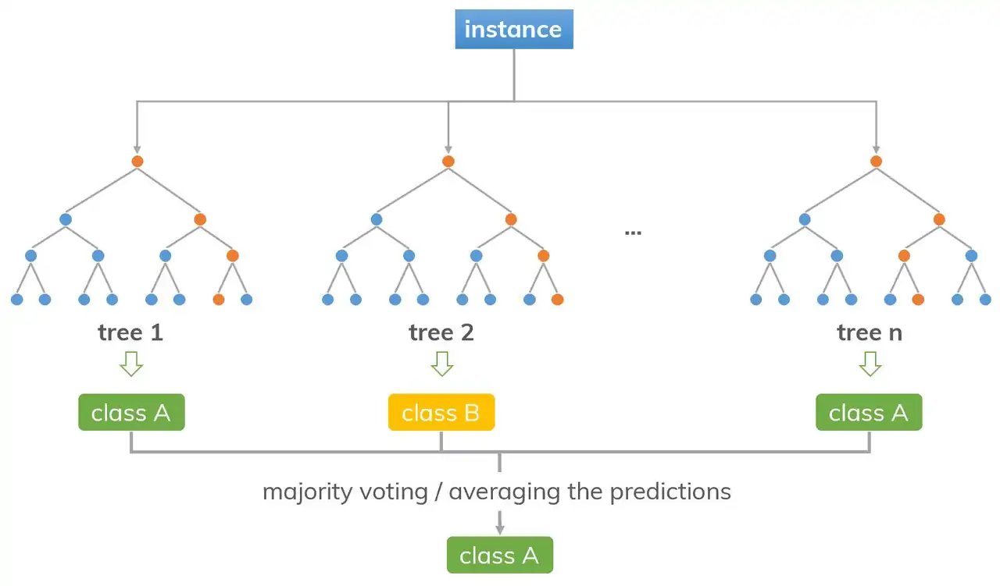
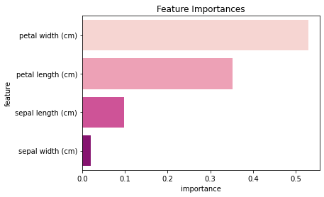
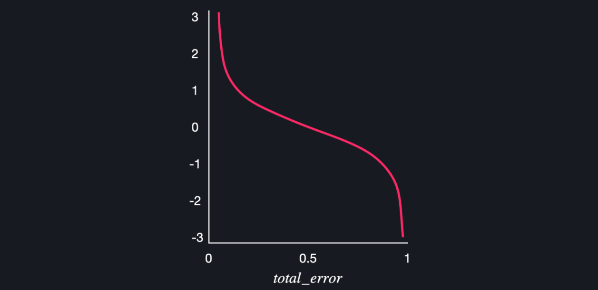
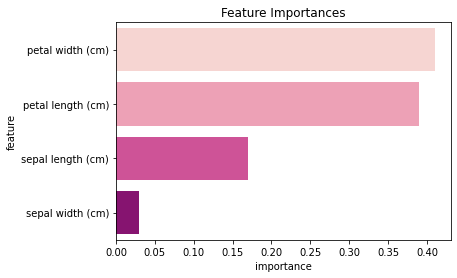

Classification 2
Table of contents
Decision Tree (결정 트리)
: 예/아니오로 답할 수 있는 어떤 질문들이 있고, 그 질문들의 답을 따라가면서 데이터를 분류하는 알고리즘
기본 개념
- 가장 위에 있는 질문 노드를 ‘root 노드’라고 하고, 트리의 가장 끝에 있는 분류 노드들을 ‘leaf 노드’라고 한다.
- leaf node는 사망/생존, or 팽귄/돌고래 이런 식으로 특정 예측값을 가지고 있고 (= 분류 노드) , 나머지 노드들은 예/아니오(True/False)로 답할 수 있는 질문들을 가지고 있다

(출처: javatpoint.com)
*트리의 노드 만들기
- 여러 질문 노드와 분류 노드의 ‘지니 불순도’를 계산해서, 지니 불순도가 가장 낮은 질문을 노드로 만들어준다.
- 질문 후보들보다 분류 노드(ex. ‘독감으로 분류’)의 지니 불순도가 낮으면 그냥 바로 분류해주는 단계로 넘어간다 (leaf node)
- ex) 독감 / 감기 분류: 특정 데이터셋을
1) 모두 독감으로 분류(분류 노드)할 때의 지니 불순도가 0.49,
2) ‘고열이 있나요?’ 질문 노드로 분류할 때의 지니 불순도가 0.34,
3) ‘몸살이 있나요?’ 질문 노드로 분류할 때의 지니 불순도가 0.33이라면 ‘몸살’ 질문 노드를 골라준다! - ※질문노드의 지니불순도는 이로 인해 분류된 2개의 데이터셋의 지니 불순도의 평균으로 계산
- 데이터가 숫자형인 경우(ex. 체온): 데이터를 정렬한 후, 각 연속된 데이터의 평균을 계산 → 이 평균을 이용해 질문을 하나씩 만듦 (ex. 36.4도가 넘나요?, 36.6도가 넘나요?,…) → 이 중 지니 불순도가 가장 낮은 질문을 선정
*지니 불순도(Gini Impurity)
- 데이터셋의 데이터들이 얼마나 혼합되어 있는지 나타내는 수치.
- 지니 불순도가 작을수록 데이터셋이 순수하다는 뜻.
- 독감 & 일반 감기 데이터가 섞여 있는 데이터셋의 지니 불순도: 1 - pflu2 - pnot_flu2 (*p는 확률)
- ex) 데이터 100개 중 70개가 독감 30개가 일반 감기 → 1 - 0.72 - 0.32 = 0.42
- ex) 50개 독감 50개 일반 감기 → 1 - 0.52 - 0.52 = 0.5
- ex) 100개 모두 독감 → 1 - 1.02 - 0.02 = 0
- 세 가지 class가 섞여있는 경우: 1 - pclass12 - pclass22 - pclass32
scikit-learn으로 데이터 학습
from sklearn.datasets import load_iris
from sklearn.model_selection import train_test_split
from sklearn.tree import DecisionTreeClassifier
import matplotlib.pyplot as plt
import numpy as np
import pandas as pd
1. 데이터 준비
# 데이터 준비: KNN, Logistic Regression에서와 동일하게 iris data 사용
iris_data = load_iris()
X = pd.DataFrame(iris_data.data, columns=iris_data.feature_names)
y = pd.DataFrame(iris_data.target, columns=['class'])
X.head()
| sepal length (cm) | sepal width (cm) | petal length (cm) | petal width (cm) | |
|---|---|---|---|---|
| 0 | 5.1 | 3.5 | 1.4 | 0.2 |
| 1 | 4.9 | 3 | 1.4 | 0.2 |
| 2 | 4.7 | 3.2 | 1.3 | 0.2 |
| 3 | 4.6 | 3.1 | 1.5 | 0.2 |
| 4 | 5 | 3.6 | 1.4 | 0.2 |
y.head()
| Class | |
|---|---|
| 0 | 0 |
| 1 | 0 |
| 2 | 0 |
| 3 | 0 |
| 4 | 0 |
2. train_test_split & 학습
X_train, X_test, y_train, y_test = train_test_split(X, y, test_size=0.2, random_state=5)
y_train = y_train.values.ravel() #ravel(): 다차원 array를 1차원 array로 평평하게 펴주는 함수.
model = DecisionTreeClassifier(max_depth=4)
- max_depth: maximum depth of the tree. (트리가 몇 층까지 내려 가는지 = depth of tree)
- max_depth를 설정해주지 않으면 모든 leaf가 pure해질 때까지 OR 모든 leaf가 min_samples_split보다 적은 양의 데이터를 가질 때까지 무한정 node가 생성된다
- depth가 너무 깊으면 training data에 과적합될 수 있기에, max_depth를 적절히 세팅해주면 좋다
model.fit(X_train, y_train)
DecisionTreeClassifier(ccp_alpha=0.0, class_weight=None, criterion='gini',
max_depth=4, max_features=None, max_leaf_nodes=None,
min_impurity_decrease=0.0, min_impurity_split=None,
min_samples_leaf=1, min_samples_split=2,
min_weight_fraction_leaf=0.0, presort='deprecated',
random_state=None, splitter='best')
- criterion: split의 qulaity를 측정하는 방식. ‘gini’(=Gini impurity)와 ‘entropy’(=information gain) 두 가지 옵션이 있으며, gini가 default.
- gini와 entropy는 사실 계산의 차이가 크지는 않기에, 어떤 걸 사용하든지 큰 상관 없다
3. test data로 성능 체크
model.predict(X_test) # 어떻게 분류했나 확인
array([1, 1, 2, 0, 2, 2, 0, 2, 0, 1, 1, 1, 2, 2, 0, 0, 2, 2, 0, 0, 1, 2,
0, 1, 1, 2, 1, 1, 1, 2])
y_test['class'].to_numpy() ## 실제 y_test와 비교
array([1, 2, 2, 0, 2, 1, 0, 1, 0, 1, 1, 2, 2, 2, 0, 0, 2, 2, 0, 0, 1, 2,
0, 1, 1, 2, 1, 1, 1, 2])
# 몇 퍼센트가 올바르게 분류되었는지 확인
model.score(X_test, y_test)
0.8666666666666667
약 87% 정도가 올바르게 분류되었다는 의미
tree 구조 확인
※ 결정트리는 분류 과정을 직관적으로 이해할 수 있고, 속성별 중요도를 쉽게 해석할 수 있다
(정확도가 아주 높은 모델은 아니지만, 해석 및 적용이 쉽다는 것이 큰 장점!)
- sklearn.tree 활용
from sklearn import tree plt.figure(figsize=(7, 7)) tree.plot_tree(model, feature_names = iris_data.feature_names, class_names = iris_data.target_names, filled = True); # 색을 칠해서 구분하겠다는 뜻
- dtreeviz 활용
- install해야 사용 가능 https://github.com/parrt/dtreeviz
from dtreeviz.trees import dtreeviz viz = dtreeviz(model, iris_data.data, # X값 iris_data.target, # y값: df 형태 말고 array 형태로 넣어주기 target_name = "target", feature_names = iris_data.feature_names, class_names = list(iris_data.target_names)) viz # +) viz.save("파일명.svg") 이렇게 해서 저장
속성 중요도 확인
*속성 중요도(Feature Importance)
- 속성의 ‘평균 지니 감소(Mean Gini Decrease)’라고 부르기도 함
*계산하는 법:
- 모든 질문 노드의 중요도(Node Importance)를 계산
- 특정 속성의 중요도:
해당 속성 질문 노드의 중요도 합 / 모든 노드의 중요도 합- 전체적으로 낮춰진 불순도에서, 특정 속성 하나가 불순도를 얼마나 낮췄는지 확인 → 그 속성의 중요한 정도를 계산하는 것!
- ex) ‘고열 여부’ 변수의 중요도: 고열 질문을 갖는 모든 노드의 중요도 합 / 트리 안에 있는 모든 노드의 중요도 합
*노드 중요도(Node Importance)
- 특정 노드 전후로 불순도가 얼마나 낮아졌는지로 해당 노드의 중요도를 판단.
- 나눠지는 데이터 셋들에 대해서 점점 더 알아간다, 또는 “더 많은 정보를 얻는다”라고 해서 이 수치를 정보 증가량 (information gain)이라고도 부름. (불순도가 낮아질수록 점점 데이터가 잘 나눠지고 있는 거니까)
*계산하는 법:
- $ ni = \dfrac{n}{m}GI - \dfrac{n_{left}}{m}GI_{left} - \dfrac{n_{right}}{m}GI_{right} $
- n: 중요도를 계산하려는 노드까지 오는 학습 데이터의 수
- GI: 이 노드까지 오는 데이터 셋의 불순도
- m: 전체 학습 데이터의 수
- 한 노드에서 데이터를 두 개로 나눴을 때, 데이터 수에 비례해서 불순도가 얼마나 줄어들었는지를 계산하는 것!
*python으로 계산
# 속성들의 중요도를 확인
model.feature_importances_ # numpy 배열로 정리되어서 나옴
array([0.04642857, 0. , 0. , 0.95357143])
# df를 만들어 importance가 큰 순서대로 정렬
df = pd.DataFrame(list(zip(iris_data.feature_names, model.feature_importances_)),
columns=['feature', 'importance']).sort_values('importance', ascending=False)
df = df.reset_index(drop=True)
df
| feature | importance | |
|---|---|---|
| 0 | petal length (cm) | 0.953571 |
| 1 | petal width (cm) | 0.046429 |
| 2 | sepal length (cm) | 0.000000 |
| 3 | sepal width (cm) | 0.000000 |
+) zip(*iterable)은 동일한 개수로 이루어진 자료형을 묶어 주는 역할을 하는 함수
list(zip("abc", "def"))
[('a', 'd'), ('b', 'e'), ('c', 'f')]
import seaborn as sns
plt.figure()
plt.title('Feature Importances')
sns.barplot(data=df, y='feature', x='importance', palette='RdPu') # palette 옵션: https://seaborn.pydata.org/generated/seaborn.color_palette.html#seaborn.color_palette
plt.show();

Random Forest
: 결정 트리 앙상블 알고리즘 중 하나. 수많은 트리들을 임의로 만들고, 이 모델들의 결과를 다수결 투표로 종합해서 예측하는 모델. (Bagging 방식의 앙상블 러닝)
- *Ensemble Learning: 하나의 모델을 쓰는 대신, 수많은 모델들을 만들고 이 모델들의 예측을 합쳐서 종합적인 예측을 하는 기법
- 결정 트리 자체는 아주 성능이 좋은 모델은 아니지만, 앙상블 기법으로 사용하면 성능이 좋은 모델을 만들 수 있음
기본 개념
*Random Forest 모델의 작동 방식:
- Bootstrapping으로 임의로 데이터셋을 만든다
- Bootstrapping: 데이터셋에서 임의로 데이터를 골라와서 새로운 데이터셋을 만들어주는 방법. (※중복을 허용해서 데이터 임의 선택)
- +) Bagging: Bootstrap Aggregating의 약어. (bootsrap 데이터 셋을 만들어내고, 이를 활용한 모델들의 결정을 종합(aggregate)해서 예측하는 앙상블 기법을 의미)
- Bootstrap 데이터셋을 만드는 이유: 앙상블 기법을 사용할 때, 모델들을 다 똑같은 데이터셋으로 학습시키면 결과가 다 비슷하게 나와버릴 수도 있기에, 모델을 만들 때마다 각각 임의로 만든 bootstrap 데이터셋을 사용해서 학습시키는 것.
- 임의로 수많은 결정 트리를 만든다 (질문 노드들을 어느 정도는 임의로 만듦)
- 각 속성을 사용한 질문들의 지니 불순도를 모두 구하고 가장 낮은 것으로 노드를 만드는 대신, 여러 속성 중 2개 정도를 임의로 선택 (속성이 많으면 더 많이 고를 수도 있음)
- 2개 중 불순도가 더 낮은 것으로 root 노드의 질문 선택
- 그 다음에도 똑같이 속성 2개 정도를 임의로 선택해서 지니 불순도 낮을 걸 사용 … (반복)
- 이렇게 1, 2단계를 반복하다보면, 서로 조금씩 다른 결정 트리들을 많이 많들 수 있다.
→ 이렇게 만든 트리들에 데이터를 넣은 후, 각 트리의 예측 값을 다수결 투표로 종합해서 최종 결정!
(ex. 40개의 트리는 ‘독감’이라고 예측, 60개의 트리는 ‘일반 감기’라고 예측 → 일반 감기라고 최종 예측)

(출처: dinhanhthi.com)
scikit-learn으로 데이터 학습
from sklearn.datasets import load_iris
from sklearn.model_selection import train_test_split
from sklearn.ensemble import RandomForestClassifier
import matplotlib.pyplot as plt
import numpy as np
import pandas as pd
1. 데이터 준비
iris_data = load_iris()
X = pd.DataFrame(iris_data.data, columns=iris_data.feature_names)
y = pd.DataFrame(iris_data.target, columns=['class'])
X_train, X_test, y_train, y_test = train_test_split(X, y, test_size=0.2, random_state=5)
y_train = y_train.values.ravel() #ravel(): 다차원 array를 1차원 array로 평평하게 펴주는 함수
2. 학습
model = RandomForestClassifier(n_estimators=100, max_depth=4)
- max_depth: 결정트리와 마찬가지로, 트리의 최대 깊이를 정하는 변수. 이 랜덤포레스트 모델이 만드는 모든 트리들의 최대 깊이를 정해줌.
model.fit(X_train, y_train)
RandomForestClassifier(bootstrap=True, ccp_alpha=0.0, class_weight=None,
criterion='gini', max_depth=4, max_features='auto',
max_leaf_nodes=None, max_samples=None,
min_impurity_decrease=0.0, min_impurity_split=None,
min_samples_leaf=1, min_samples_split=2,
min_weight_fraction_leaf=0.0, n_estimators=100,
n_jobs=None, oob_score=False, random_state=None,
verbose=0, warm_start=False)
- bootstrap: False라고 하면 모든 tree에 다 whole dataset을 사용. (default=True)
- max_samples: bootstrap=True인 경우, 각 tree 학습을 위해 X에서 몇 개씩의 sample을 추출할 것인지
- None(default)인 경우, 자동으로 X.shape[0]개의 sample을 추출
(ex. 이 경우, X_train.shape[0]=120이므로 각각 120개의 element가 담긴 sample을 구성)
- None(default)인 경우, 자동으로 X.shape[0]개의 sample을 추출
- n_estimators: 몇 개의 결정트리를 만들어서 예측할 것인지 정해주는 변수. (default=100)
3. test data로 성능 체크
model.predict(X_test) # 어떻게 분류했나 확인
array([1, 1, 2, 0, 2, 1, 0, 2, 0, 1, 1, 1, 2, 2, 0, 0, 2, 2, 0, 0, 1, 2,
0, 1, 1, 2, 1, 1, 1, 2])
y_test['class'].to_numpy() ## 실제 y_test와 비교
array([1, 2, 2, 0, 2, 1, 0, 1, 0, 1, 1, 2, 2, 2, 0, 0, 2, 2, 0, 0, 1, 2,
0, 1, 1, 2, 1, 1, 1, 2])
# 몇 퍼센트가 올바르게 분류되었는지 확인
model.score(X_test, y_test)
0.9
약 90% 정도가 올바르게 분류되었다는 의미
속성 중요도 확인
- 결정트리를 사용한 모델이기에, 결정 트리와 마찬가지로 평균 지니 감소를 이용해 속성 중요도 계산이 가능
- 랜덤 포레스트에서의 속성 중요도는 그 안의 수많은 결정 트리들의 속성 중요도의 평균값
# 속성 중요도 확인
model.feature_importances_
array([0.09846022, 0.01962833, 0.35241878, 0.52949267])
# df를 만들어 importance가 큰 순서대로 정렬
df = pd.DataFrame(list(zip(iris_data.feature_names, model.feature_importances_)),
columns=['feature', 'importance']).sort_values('importance', ascending=False)
df = df.reset_index(drop=True)
df
| feature | importance | |
|---|---|---|
| 0 | petal width (cm) | 0.529493 |
| 1 | petal length (cm) | 0.352419 |
| 2 | sepal length (cm) | 0.098460 |
| 3 | sepal width (cm) | 0.019628 |
import seaborn as sns
plt.figure()
plt.title('Feature Importances')
sns.barplot(data=df, y='feature', x='importance', palette='RdPu')
plt.show();

- 보통, random forest 모델이 decision tree 모델보다 각 feature를 골고루 반영해서 예측한다.
(does not depend highly on any specific set of features)
AdaBoost
: Adaptive Boosting. - Boosting 기법을 사용한 앙상블 러닝 알고리즘 중 하나.
기본 개념
*Boosting 기법:
- 일부러 성능이 안좋은 모델(weak learner)을 사용
- 더 먼저 만든 모델의 성능에 따라 뒤에 있는 모델이 사용할 데이터셋을 바꾼다
- 모델별 성능의 차이를 반영해서 모델의 예측을 종합한다 (성능이 좋은 모델의 예측을 더 반영)
*AdaBoost 작동 방식:
- 스텀프(stump)를 사용
- 스텀프: root 노드 하나와 분류 노드 두 개를 갖는 얕은 결정 트리. 보통 50%보다 조금 나은 정도의 성능.
- 특정 결정 스텀프가 분류한 결과를 보고, 맞게 분류한 애들은 중요도를 낮추고 틀리게 분류한 애들은 중요도를 높여준다
- 다음 스텀프는 앞의 스텀프의 분류 결과에 따라 중요도가 조정된 데이터셋을 사용해 학습한다
- 뒤의 스텀프가 앞의 스텀프의 실수를 더 잘 맞추게 되는 방향으로 만들어지는 것.
- 수많은 스텀프를 만들어준 후에, 각 스텀프의 성능을 고려해 종합적으로 결과를 예측한다
- 다수결로 결과를 결정하되, 성능이 좋은 결정 스텀프일수록 예측 의견의 비중을 높게 반영
*stump의 성능 계산하기:
- $ \dfrac{1}{2}\log(\dfrac{1- total \, error}{total \, error}) $
- total error: 잘못 분류한 데이터들의 중요도의 합
- 늘 모든 데이터의 중요도의 합은 1로 유지되므로, total error의 최댓값은 1
- total error가 1인 경우 (=모든 데이터를 다 틀리게 예측한 경우) 성능이 무한하게 작아진다
- total error가 0인 경우 (=모든 데이터를 다 맞게 예측한 경우) 성능이 무한하게 커진다
- total error가 0.5인 경우 (= 딱 반만 맞게 예측한 경우) 성능은 0

(출처: codeit)
*stump 추가하기:
- 첫 스텀프는 결정트리를 만들 때처럼 지니불순도를 계산해서 root 노드를 고른다
- 그 후 스텀프 추가하기:
- 각 데이터의 중요도를 가지고 범위를 만들어준다.
(ex. 첫번째 데이터는 중요도가 0.1 → 범위가 0 ~ 0.1, 두번째 데이터는 중요도가 0.2 → 범위가 0.1 ~ 0.3, 세번째 데이터는 중요도가 0.15 → 범위가 0.3 ~ 0.45, …) - 0과 1 사이의 임의의 숫자를 골라, 그 숫자가 속하는 범위의 데이터를 데이터셋에 추가한다
- ※ 중요도가 높은 데이터는 범위도 크기 때문에 선택될 확률이 높아지는 것!
- 각 데이터의 중요도를 가지고 범위를 만들어준다.
→ 새로운 데이터 셋은 전 스텀프들이 틀린, 중요도가 높은 데이터들이 확률적으로 더 많이 들어있기 때문에 얘네를 더 잘 맞출 수 있게 됨.
*데이터 중요도 바꾸기:
- 첫 스텀프를 만들 때는 모든 데이터의 중요도가 같다 (ex. 데이터가 10개면 각각의 중요도는 1/10)
- 틀리게 분류한 데이터: $ weight_{new} = weight_{old} * e^{p_{tree}} $
- $ e $: 자연상수. 2.71…
- $ p_{tree} $: 스텀프의 성능
- 맞게 분류한 데이터: $ weight_{new} = weight_{old} * e^{-p_{tree}} $
- 성능이 0이면 $ weight_{new} $ = 1
- 틀린 데이터는 $ weight_{old} $에 1보다 큰 값을 곱하게 되므로 원래보다 중요도가 커짐
- 맞은 데이터는 $ weight_{old} $에 1보다 작은 값을 곱하게 되므로 원래보다 중요도가 작아짐
scikit-learn으로 데이터 학습
from sklearn.datasets import load_iris
from sklearn.model_selection import train_test_split
from sklearn.ensemble import AdaBoostClassifier
import matplotlib.pyplot as plt
import numpy as np
import pandas as pd
1. 데이터 준비
iris_data = load_iris()
X = pd.DataFrame(iris_data.data, columns=iris_data.feature_names)
y = pd.DataFrame(iris_data.target, columns=['class'])
X_train, X_test, y_train, y_test = train_test_split(X, y, test_size=0.2, random_state=5)
y_train = y_train.values.ravel() #ravel(): 다차원 array를 1차원 array로 평평하게 펴주는 함수
2. 학습
model = AdaBoostClassifier(n_estimators=100)
- n_estimators: 최대 몇 개의 결정 스텀프(stump)를 만들어서 예측할 것인지 정해주는 변수. 기본값은 50.
model.fit(X_train, y_train)
AdaBoostClassifier(algorithm='SAMME.R', base_estimator=None, learning_rate=1.0,
n_estimators=100, random_state=None)
- base_estimator: 어떤 estimator를 바탕으로 boosted ensemble을 구축할 것인지.
- default: None이며, None인 경우 max_depth=1의 DecisionTreeClassifier를 사용 (=결정 스텀프를 사용)
- learning_rate: 각 classifier의 기여도를 낮춰줄 수 있음. (float number를 입력)
3. test data로 성능 체크
model.predict(X_test) # 어떻게 분류했나 확인
array([1, 1, 2, 0, 2, 2, 0, 2, 0, 1, 1, 1, 2, 2, 0, 0, 2, 2, 0, 0, 1, 2,
0, 1, 1, 2, 1, 1, 1, 2])
y_test['class'].to_numpy() ## 실제 y_test와 비교
array([1, 2, 2, 0, 2, 1, 0, 1, 0, 1, 1, 2, 2, 2, 0, 0, 2, 2, 0, 0, 1, 2,
0, 1, 1, 2, 1, 1, 1, 2])
# 몇 퍼센트가 올바르게 분류되었는지 확인
model.score(X_test, y_test)
0.8666666666666667
약 87% 정도가 올바르게 분류되었다는 의미
속성 중요도 확인
- 결정트리를 사용한 모델이기에, 결정 트리와 마찬가지로 평균 지니 감소를 이용해 속성 중요도 계산이 가능
- 에다부스트에서의 속성 중요도는 각 결정 스텀프들의 속성 중요도의 weighted average (각 스텀프의 성능 차이를 반영해 평균냄)
# 속성 중요도 확인
model.feature_importances_
array([0.17, 0.03, 0.39, 0.41])
# df를 만들어 importance가 큰 순서대로 정렬
df = pd.DataFrame(list(zip(iris_data.feature_names, model.feature_importances_)),
columns=['feature', 'importance']).sort_values('importance', ascending=False)
df = df.reset_index(drop=True)
df
| feature | importance | |
|---|---|---|
| 0 | petal width (cm) | 0.41 |
| 1 | petal length (cm) | 0.39 |
| 2 | sepal length (cm) | 0.17 |
| 3 | sepal width (cm) | 0.03 |
import seaborn as sns
plt.figure()
plt.title('Feature Importances')
sns.barplot(data=df, y='feature', x='importance', palette='RdPu')
plt.show();
